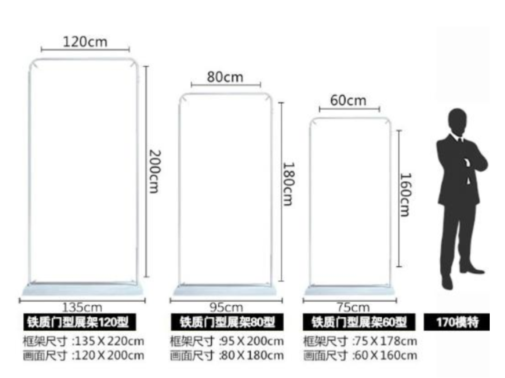

易拉宝设计尺寸
整理常见铁质门型展架（120 / 80 / 60 型）的框架尺寸与画面尺寸，并附上 170cm 模特的身高比例参照，方便在设计与制作时快速查对。
本文整理自一份关于易拉宝设计尺寸的图文资料，版权归原作者所有。以下为原文内容整理与数据转录。
01 / 三种门型展架尺寸一览
常见的铁质门型展架按画面宽度分为 120 型、80 型、60 型三种。下图标注了各型号的框架尺寸、画面尺寸与底座宽度，并以 170cm 身高的模特作为比例参照。

02 / 画面尺寸与框架尺寸对照
将图中数据整理成表，便于设计时快速查对。注意「框架尺寸」为整个展架含底座的外框尺寸，「画面尺寸」为实际喷绘画面的净尺寸，设计稿件应以画面尺寸为准。
| 型号 | 框架尺寸 | 画面尺寸 |
|---|---|---|
| 铁质门型展架 120 型 | 135 × 220 cm | 120 × 200 cm |
| 铁质门型展架 80 型 | 95 × 200 cm | 80 × 180 cm |
| 铁质门型展架 60 型 | 75 × 178 cm | 60 × 160 cm |
从图中标注还可看出：三种型号的画面宽度分别为 120cm、80cm、60cm，画面高度分别为 200cm、180cm、160cm；底座宽度为 135cm、95cm、75cm；旁边站立的模特身高为 170cm，可据此判断展架与人体的相对高度。
「 设计稿件按画面尺寸输出：120 型 120×200cm、80 型 80×180cm、60 型 60×160cm，再看框架与底座预留安装空间。 」
— 原文要点整理